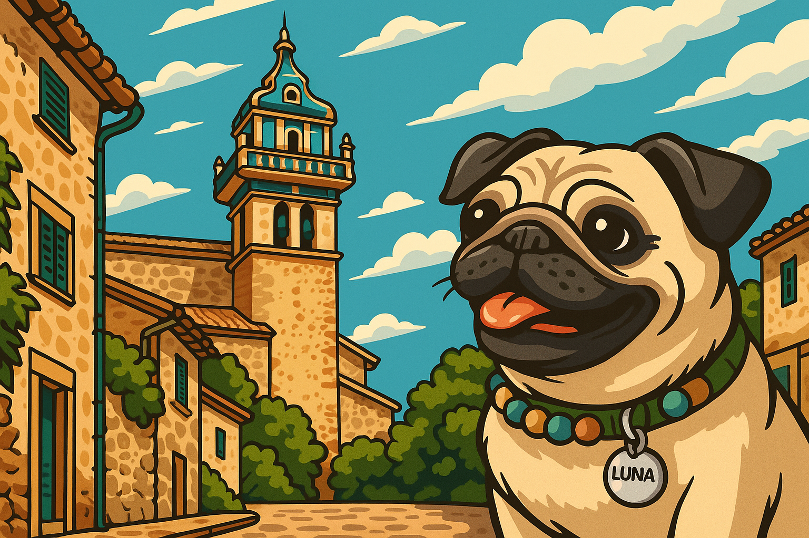
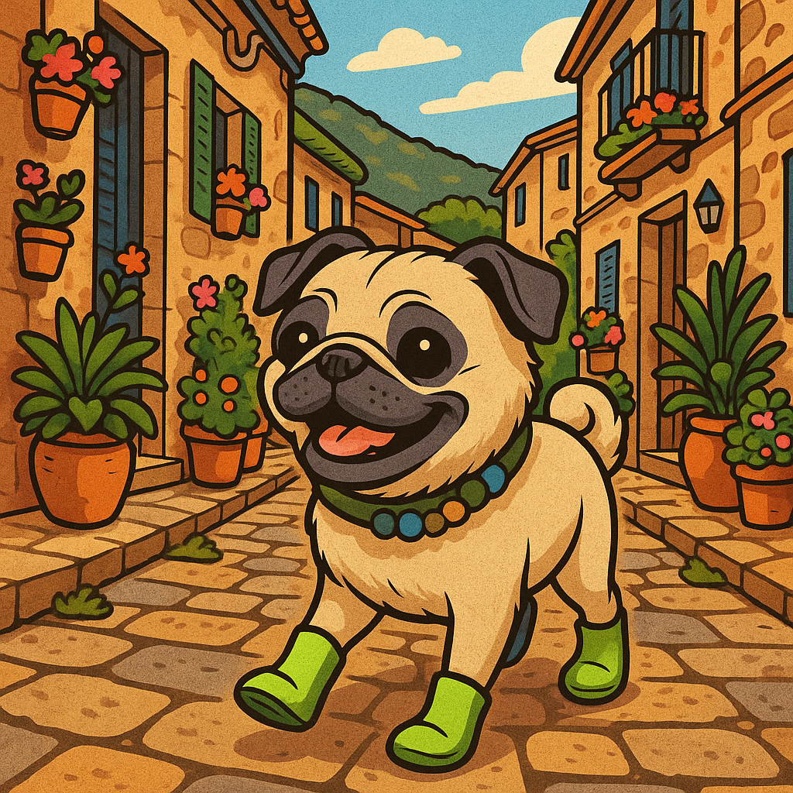
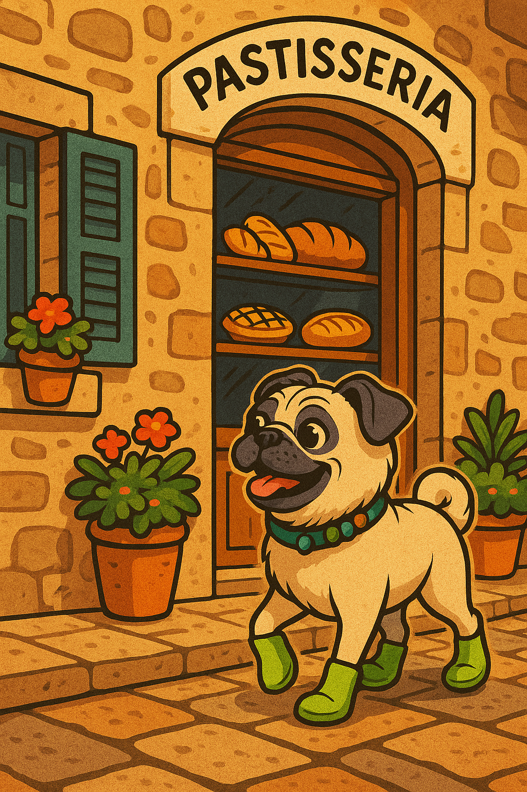
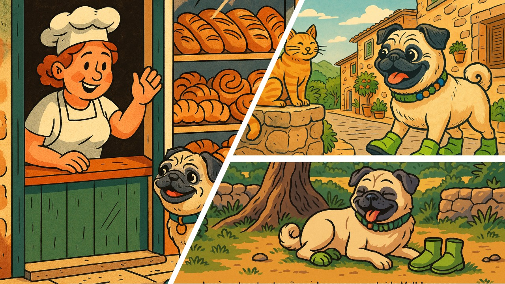

<!DOCTYPE html>
<html lang="en">
<head>
    <meta charset="UTF-8">
    <meta name="viewport" content="width=device-width, initial-scale=1.0">
    <title>Luna's Hidden Adventure in Valldemossa</title>
    <link href="https://fonts.googleapis.com/css2?family=Quicksand:wght@400;600&display=swap" rel="stylesheet">
    <style>
        body {
            margin: 0;
            padding: 0;
            font-family: 'Quicksand', sans-serif;
            background: linear-gradient(#f9f7f3, #e0ece4);
            color: #333;
            line-height: 1.6;
        }

        .container {
            max-width: 800px;
            margin: 0 auto;
            padding: 2rem;
        }

        h1 {
            text-align: center;
            font-weight: 600;
            font-size: 2rem;
            margin-bottom: 1rem;
        }

        .icon {
            text-align: center;
            font-size: 2.5rem;
            margin-bottom: 1rem;
        }

        p {
            margin-bottom: 1.5rem;
        }

        .divider {
            border: none;
            height: 1px;
            background: #c8d5c3;
            margin: 2rem 0;
        }

        .scene-img {
            width: 100%;
            border-radius: 12px;
            margin: 2rem 0;
            box-shadow: 0 4px 12px rgba(0, 0, 0, 0.1);
            opacity: 0;
            transform: translateY(20px);
            transition: opacity 1s ease-out, transform 1s ease-out;
        }

        .scene-img.show {
            opacity: 1;
            transform: translateY(0);
        }

        footer {
            text-align: center;
            font-size: 0.9rem;
            margin-top: 3rem;
            color: #777;
        }

        @media (max-width: 600px) {
            .container {
                padding: 1rem;
            }

            h1 {
                font-size: 1.5rem;
            }
        }
    </style>
    <script>
        document.addEventListener('DOMContentLoaded', () => {
            const images = document.querySelectorAll('.scene-img');
            const observer = new IntersectionObserver(entries => {
                entries.forEach(entry => {
                    if (entry.isIntersecting) {
                        entry.target.classList.add('show');
                    }
                });
            }, { threshold: 0.1 });

            images.forEach(img => {
                observer.observe(img);
            });
        });
    </script>
</head>
<body>

    <div class="container">
        <div class="icon">🐾</div>
        

<div style="text-align: center; margin-bottom: 2rem;">
    <button onclick="document.getElementById('audio').play()" style="background-color: #f0c674; border: none; border-radius: 8px; padding: 10px 20px; font-size: 1rem; cursor: pointer;">
        🎧 Listen to the Story
    </button>
</div>
<audio id="audio" src="Play.ht - 🐾Luna's Adventure in Valldemossa.wav"></audio>

        

        <p>Valldemossa. Even the name sounded like a promise – cobbled streets, hidden doors, and the scent of freshly baked secrets. 🥐✨</p>

<p>Luna wandered the narrow alleys with her little canvas bag swinging at her side. Above her, soft wisps of cloud drifted lazily across the sky, as if trying to stretch the morning a little longer. Somewhere in this village — tucked between stone walls and blooming geraniums — there was said to be a <em>secret bakery</em>. Not just any bakery. <em>The</em> bakery. The one with the best <strong>Coca de Patata</strong> in all of Mallorca. 🍠</p>

<p>But finding it wasn’t as simple as following a map. According to the old lady at the café — a woman with hands like twisted olive branches — Luna had to find <strong>the golden potato</strong>. Whatever that meant. 🥔✨</p>

<p>She peered into windows lined with lace curtains, glanced behind crumbling lanterns, and listened to the whispers of the village. Once in a while, a cat would slip past — black, grey, tabby — each one giving her a slow, knowing blink, as if they too were keepers of secrets. 🐱</p>

<p>At the corner of a sun-warmed plaza, she nearly tripped over a red ball. It rolled to a stop against her foot, and a boy with messy hair and freckled cheeks came chasing after it. ⚽</p>

<p>“No worries,” Luna smiled. “Hey… by any chance, do you know something about a golden potato?” 🥔</p>

<p>He pointed at a small, crooked bookstore across the square. <em>"Ask Señora Maribel,"</em> he said. <em>"She knows everything."</em> 📚</p>

<p>Inside, it smelled of old paper and wild herbs. A bell chimed overhead as Luna entered. 🔔</p>

<p>Maribel smiled — the kind of smile that had a thousand stories tucked inside it. She reached under the counter and pulled out a battered, leather-bound book. It had no title, only a small, hand-painted golden potato on the cover. 📖</p>

<p>She slid it across to Luna. "Follow the clues," Maribel said. "And don’t forget to trust the cats." 🐾</p>

<p>The sun climbed higher, and the stones under her Wagwellies grew warm. She flipped open the battered leather book. On the first page, written in careful, swirling script, was a riddle:</p>

<p><em>"Where music once whispered through cold winter walls,<br>
Find the flower that blooms without gardens or halls."</em> 🎵🌸</p>

<p>Luna wrinkled her nose thoughtfully. Music... winter... She remembered: Valldemossa was famous for the old monastery where Chopin had once lived during a rainy winter. That must be it — <strong>the Royal Charterhouse</strong>!</p>

<p>Excited, she hurried through the winding alleys, her Wagwellies tapping lightly over the stones. Locals smiled as she passed — an old man playing chess under a fig tree, two women gossiping on a bench with sunhats flopping over their faces. Everywhere, the village buzzed with quiet, timeless life.</p>

<p>At the entrance of the Charterhouse, the heavy wooden door stood half-open. Inside, cool stone walls wrapped around her. Echoes of footsteps danced in the empty corridors.</p>

<p>She searched carefully. And then she saw it — tucked in a dusty corner near an old piano — a painted tile. On it, a single flower bloomed — not in a garden, but on the cool stone itself. A <strong>blue gentian</strong>, delicate and wild. 🌸</p>

<p>Under the tile, a tiny brass plaque read:</p>

<p><em>"Patience brings sweetness. Follow the scent of almonds."</em> 🌰</p>

<p>Luna smiled wide. She could almost smell it already — that soft, nutty scent drifting through the air.</p>

<hr class="divider">

<p>As Luna tucked the leather book under her arm, she noticed a second page fluttering loose behind the first riddle.<br>
It wasn’t a riddle exactly — more like a curious hint:</p>

<p><em>"Where crowds gather like bees to a flower,<br>
Find the stone that remembers music and dreams."</em> 🎻🪨</p>

<p>Luna raised an eyebrow. Crowds? In a sleepy village like this?<br>
Then she remembered: <strong>the statue of Chopin</strong> near the monastery square — a place where tourists paused for photos, umbrellas, and ice cream breaks.</p>

<p>"But... crowds mean people," Luna thought with a slight frown.<br>
"And people mean food stalls... maybe even a snack." 🍦🥪<br>
Her stomach gave an encouraging growl. Loudly.</p>

<p>She laughed to herself, shaking her head.<br>
<em>"Focus, Luna. Adventure first, pastries second... Maybe third. Definitely third."</em> 🤣<br>
She gave a little wink to the cat, who was now trotting ahead like a tour guide on a mission. 🐾</p>

<p>Soon, she reached the small stone plaza where a bronze statue of Chopin stood, gazing wistfully into the hills.<br>
Around him buzzed the low hum of visitors — backpacks, cameras, the smell of sunscreen. 📷🌿</p>

<p>Next to the statue, embedded into the stone floor, was a plaque:<br>
<em>"To Frédéric Chopin, whose music made even the winter rains of Valldemossa sing."</em> 🎶</p>

<p>And right beneath the plaque, almost hidden by a potted olive tree, was a tiny, glinting object.<br>
A small brass key — shaped like a golden potato. 🥔🔑</p>

<p>Luna's eyes widened. She snatched it up and tucked it safely into her bag.</p>



<p>She followed the narrow path behind the statue, the scent of almonds growing stronger with every step. 🐾🌰<br>
It wound past blooming pots, rustling ivy, and a sleepy cat sunbathing on a windowsill. Just as Luna began to wonder if she’d made a wrong turn, the cat sprang up, gave her a slow blink, and padded around a corner. 🐱</p>

<p>Luna hurried after it — and there it was.</p>

<p>Between two crumbling stone walls stood a tiny wooden door, barely marked. Hanging above it, swaying gently in the breeze, was a painted wooden sign with a <strong>golden potato</strong> and the words: <em>“Pastisseria Secreta.”</em> 🥔✨</p>

<p>Inside, warm air wrapped around her like a hug. The room smelled of roasted almonds, powdered sugar, and fresh dough. Behind the counter stood a woman with flour on her nose and a twinkle in her eye.</p>





<p>Without a word, she placed a small, golden <strong>Coca de Patata</strong> on a blue ceramic plate and slid it toward Luna. It was soft, warm, and sparkled with a light dusting of sugar. 🍠🍞</p>

<p>Luna took a bite — and the world momentarily disappeared. Sweet, fluffy, slightly nutty. It tasted like sunshine and secrets. 🌞🧁</p>

<p>The woman leaned in and whispered, "Some treasures are found only by those who follow their nose — and their heart. And maybe a cat or two." 🐾</p>

<p>Luna smiled, her belly and heart finally full. She stepped back outside, Coca in paw, as the village of Valldemossa hummed gently around her — ancient, wise, and quietly magical.</p>


<p style="text-align: center;"><em>If you ever find yourself wandering the cobbled streets of Valldemossa,<br>
follow the scent of almonds. Listen for music hidden in the stones.<br>
And maybe — just maybe — you’ll find your own golden adventure.<br>
Just don't forget your best walking shoes. 🌸✨</em></p>



<br>
    <a href="index.html">&larr; Back to the Main Map</a>
</footer>

    </div>

</body>
</html>
